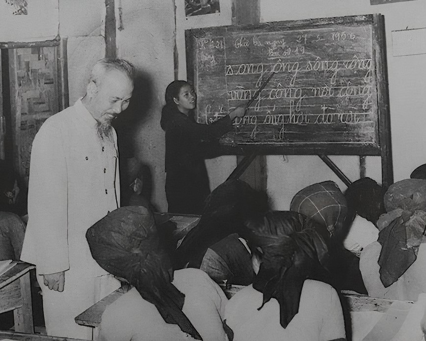

TRƯỜNG HỌC CỦA BÁC
Chủ tịch Hồ Chí Minh
TRƯỜNG HỌC CỦA BÁC
Có lần nhân câu chuyện kể với các bạn trẻ trong khu Phủ Chủ tịch, Bác nói:
“Các cô, các chú bây giờ đi học có trường, có bàn ghế, có cô thầy, bạn bè, sách vở, giấy bút, có giờ giấc đàng hoàng. Tối đến có đèn điện, thế mà học một năm không lên được một lớp là không đúng.
Ngày xưa, lúc Bác đang tuổi các cô, các chú thì tất cả bàn ghế, thầy, bạn, sách vở, giấy bút chỉ có trong bàn tay này thôi”.
Bác giơ bàn tay trái lên nói tiếp:
“Hồi ấy Bác làm bồi tàu, là người quét tuyết ở Anh, rồi đi làm phụ bếp. Làm việc từ sáng đến tối, suốt ngày không được cầm đến tờ báo mà xem. Đến đêm mới hết việc, mới được đọc sách, đọc báo. Ban ngày muốn học chỉ có một cách là viết chữ lên mảnh da tay này. Cứ mỗi buổi sáng viết mấy chữ, rồi đi cọ sàn tàu, cọ thùng, đánh nồi, rửa bát, thái thịt, băm rau, vừa làm vừa nhìn vào da bàn tay mà học. Hết ngày, người thì mồ hôi đầm đìa, chữ cũng mờ đi, cuối buổi đi tắm mới xóa được chữ ấy đi. Coi như đã thuộc. Sáng mai lại ghi chữ mới”.

Sách “Hồ Chí Minh, đồng chí của chúng ta” gồm nhiều hồi ký của các bạn Pháp viết, Nhà xuất bản Xã hội Paris in năm 1970, có trích một đoạn Bác trả lời phóng viên A.Kan (báo Nhân đạo của Đảng Cộng sản Pháp) như sau: “Tôi không có hạnh phúc được theo học ở trường đại học. Nhưng cuộc sống đã cho tôi cơ hội học lịch sử, khoa học xã hội và ngay cả khoa học quân sự. Phải yêu cái gì? Phải ghét cái gì? Cũng như tôi, tất cả người Việt Nam cần phải yêu độc lập, lao động, Tổ quốc”. (tr. 203)… “Tất nhiên không phải riêng tôi mà toàn thế giới đều kính trọng những nhà báo chân chính. Tôi cũng có thời gian học làm báo, cũng có thời gian tôi bỏ ngòi bút, cầm súng để chống lại kẻ thù, chống lại chủ nghĩa thực dân. Khi tôi còn ở Pháp, khi còn biết ít tiếng Pháp tôi đã là Tổng biên tập, biên tập và phát hành cả một tờ báo”. (tr. 202)
Bác thường nói với cán bộ:“Học thêm được một thứ tiếng nước ngoài coi như có thêm một cái chìa khóa để mở thêm một kho tàng tri thức. Việc học là việc suốt đời”.
Qua câu chuyện kể, cho chúng ta thấy tầm quan trọng của việc học tập, dù ở cương vị nào, lứa tuổi nào, thời đại nào thì việc học cũng rất cần thiết, phải học tập để nâng cao trình độ, kiến thức cho bản thân, góp phần xây dựng xã hội ngày càng phát triển.